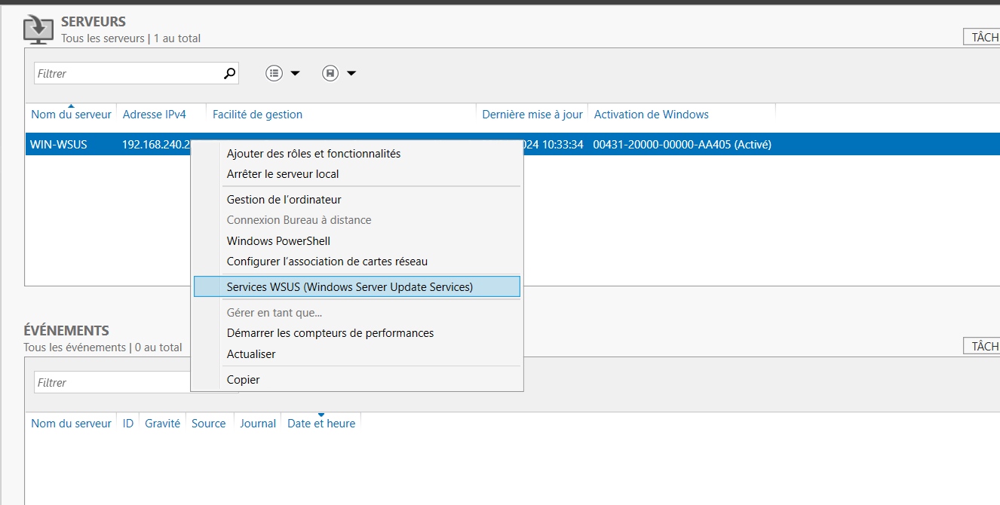
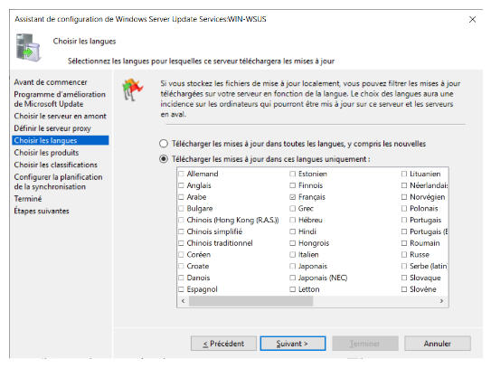

WSUS

Sélectionner le rôle Services WSUS. Ensuite, cliquer sur suivant.
Garder les services de rôles par défaut.
Sélectionner l'emplacement de stockage des mises à jour (choisir de préférence un autre disque que C:).
Finir l'installation.

Faire la configuration post-déploiement.

Faire un clic droit sur le serveur WSUS puis cliquer sur Services WSUS.

Vérifier le chemin d'accès au répertoire qui contiendra les mises à jour.

Cliquer sur suivant et décocher la case de participation au programme d'amélioration de Microsoft update.
Continuer l'installation puis cliquer sur Démarrer la connexion pour tester la connexion entre le serveur WSUS et Windows Update.
Attendre ensuite que le test de connexion soit terminé.

Choisir la lanque que l'on souhaite pour les mises à jour puis cliquer sur Suivant.

Choisir les produits pour les quels on souhaite avoir les mises à jour puis cliquer sur Suivant.

Choisir les types de mises à jour que l'on souhaite, puis finir l'installation.
On passe ensuite sur le contrôleur de domaine pour mettre en place des GPO.
Configuration Ordinateur > Modèles d’administration > Composant Windows > Windows Update
- Configuration du service Mises à jour Automatiques
Permet de configurer la façon dont les mises à jour seront installées. (date, heure) - Spécifier l’emplacement intranet du service de mise à jour Microsoft
Permet de donner l'emplacement du serveur WSUS. - Fréquence de détection des mises à jour automatiques
Définit le temps entre chaque recherche de mises à jour. - Autoriser le ciblage côté client
Indique le nom de groupe cible à utiliser pour recevoir les mises à jour. - Ne pas se connecter à des emplacements Internet Windows Update
Permet d'éviter que les clients ne se connectent à Windows Update.

Dans les services WSUS, aller dans Mises à jour puis cliquer sur Rechercher…
Rechercher les mises à jour souhaitées et choisir de les approuver ou de les refuser pour un ensemble d'ordinateurs.